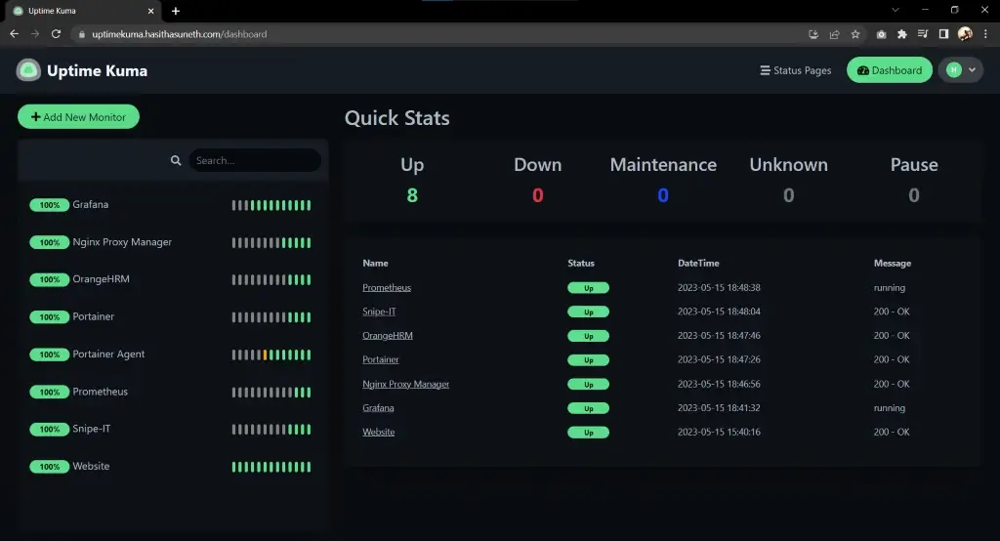
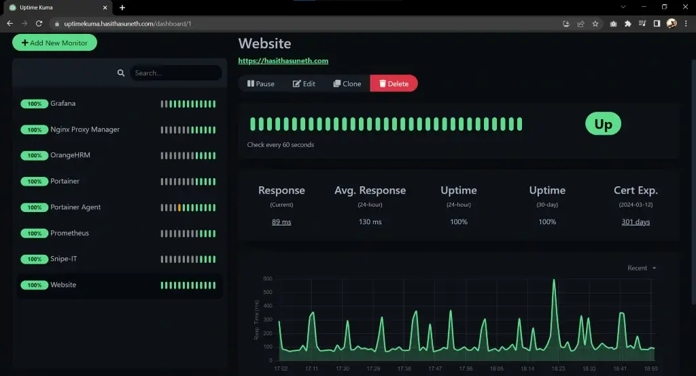
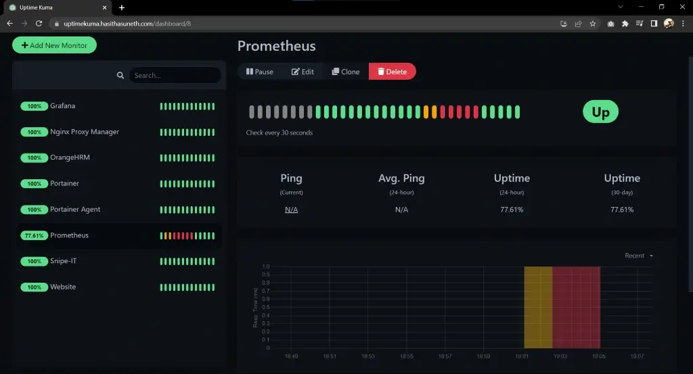
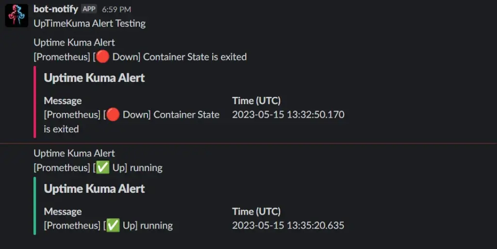

Uptime Kuma Deployment
Uptime Kuma is a self-hosted monitoring tool that tracks the uptime and status of websites, servers, and APIs, offering real-time alerts and a customizable dashboard.
Table of contents
What is Uptime Kuma?
Uptime Kuma is a modern, lightweight, and self-hosted monitoring system designed to track the uptime and performance of websites, servers, and APIs. It supports various protocols such as HTTP(S), TCP, and ICMP (ping), and provides instant notifications through popular channels like email, Slack, Discord, and more.
With its intuitive, customizable dashboard and user-friendly interface, Uptime Kuma enables users to create detailed monitoring configurations and view historical data through graphs and logs. It is a free and open-source solution, ideal for individuals or organizations that want reliable uptime monitoring without relying on third-party services.
Website Documentation GitHub Demo Docker hub

Steps to follow
- Install Docker, and Docker-Compose
- Deploy Uptime Kuma
- with Docker
- with Docker-Compose
Install Docker, and Docker-Compose
Install Docker Engine
Note
Find the official guide here. Follow this official guide for install Docker on other Linux distribution systems.
1. Uninstall old versions
sudo apt-get remove docker docker-engine docker.io containerd runc
2. Set up the repository
Update the apt package index and install packages to allow apt to use a repository over HTTPS:
sudo apt-get update sudo apt-get install ca-certificates curl gnupg lsb-release
Add Docker’s official GPG key:
sudo mkdir -m 0755 -p /etc/apt/keyrings curl -fsSL https://download.docker.com/linux/ubuntu/gpg | sudo gpg --dearmor -o /etc/apt/keyrings/docker.gpg
Use the following command to set up the repository:
echo \ "deb [arch=$(dpkg --print-architecture) signed-by=/etc/apt/keyrings/docker.gpg] https://download.docker.com/linux/ubuntu \ $(lsb_release -cs) stable" | sudo tee /etc/apt/sources.list.d/docker.list > /dev/null
3. Install Docker Engine
sudo apt-get update sudo apt-get install docker-ce docker-ce-cli containerd.io
Verify that the Docker Engine is installed correctly.
sudo systemctl is-active docker
Install Docker-Compose (*Optional)
In this case (29/12/2024), it is v2.31.0; Refer to the GitHub Releases to identify the latest version.
Download and install Compose standalone latest version
curl -SL https://github.com/docker/compose/releases/download/v2.31.0/docker-compose-linux-x86_64 -o /usr/local/bin/docker-compose sudo chmod +x /usr/local/bin/docker-compose
Verify that the Docker-Compose is installed correctly.
sudo docker-compose --version
Tip:
If the command docker-compose fails after installation, check your path. You can also create a symbolic link to
/usr/binor any other directory in your path. For example:
sudo ln -s /usr/local/bin/docker-compose /usr/bin/docker-compose
Deploy Uptime Kuma
Method 01: with Docker
docker run -d --restart=always -p 3001:3001 -v uptime-kuma:/app/data --name uptime-kuma louislam/uptime-kuma:1
# check the container status
docker ps
Method 02: with Docker-Compose
Create and add configurations to docker-compose.yml file.
nano docker-compose.yml
volumes:
uptimekuma-data:
driver: local
services:
uptimekuma:
image: louislam/uptime-kuma:1
container_name: uptimekuma
ports:
- "3001:3001"
volumes:
- uptimekuma-data:/app/data
# - /var/run/docker.sock:/var/run/docker.sock
restart: unless-stopped
docker-compose up -d
# check the container status
docker-compose ps
Login to the web UI
Now you can log in to the web UI. Simply use your browser to connect to your server by using the IP address or an FQDN and connect on port 3001.
Screenshots



